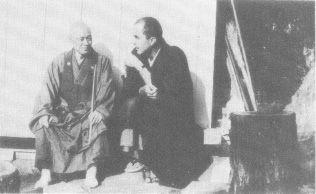
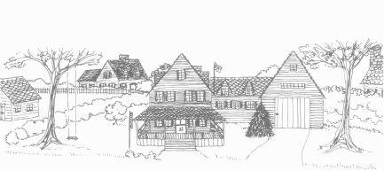

The Zen Center
Bell ringing at 4 a.m. You get up immediately.
Han (block of hard ash wood struck with wooden mallet) starts at 4:05. 15 minute han, 3 rounds. You should be in the zendo by end of second round.
Zazen (sitting meditation) starts at 4:20. 40 minute period. Roshi makes a round of the zendo in the beginning. People bowing as he approaches (actually, gassho-ing—hands together and bow).
Bell sounds after 40 minutes. Kinhin (walking meditation) begins. Kinhin for 15 minutes. (Hands on chest, walking very slowly in a line, about a half step with each breath).
Second period of zazen (40 minutes).
Service at 5:50. Consists of bowing to the floor 9 times, reciting the Heart Sutra 3 times, bowing to floor 3 times; lasts about 20 minutes. With bells and large wooden drum.
Study period. One hour. In large room with fire if it’s cold. Kerosene lamps. Tea is served. Warmth often makes you drowsy. You read various texts. Short chant at beginning and end of period.
Han for breakfast starts at 7:10.
Breakfast is served in the zendo. You sit on cushions in meditation posture. Each student has: an oryoki (set of 3 bowls, spoon and chopsticks, a scraper, setsu (stick with cloth end), and 3 cloths (for napkin, bowl-wiping, and cloth in which entire oryoki is wrapped—folded and tied in prescribed manner). Ritual way for untying and removing bowls. Bowls are placed on an eating board in front of each student. Complicated oryoki ritual helps to focus attention. Meals are a sort of meditation, in silence, with as little noise as possible.
Chanting precedes meal (in English at breakfast, Japanese at lunch). After short chant, students set up their oryokis. Chanting resumes and servers enter. As server stops before student, they bow to each other, server kneels and dishes food into bowl, they bow again and server goes on to next student. There is chanting while food is served (reciting names of Buddha and Bodhisattvas). When servers leave there is more chanting (we should be mindful of where this food comes from and whether our practice deserved it). Meal is eaten. When meal is finished server enters with hot water and there is a short chant. Hot water is poured in large bowl. Bowl is cleaned and water poured in second bowl, bowl wiped with cloth, and so on until the bowls are cleaned. Water is drunk, with a little bit saved and collected at the end (it’s taken out and poured on a plant). Oryokis are tied up and put away (placed by the side of each student). Clackers and bow at the end of meal, roshi and priests leave, then students leave. As students file out of zendo they exchange bows with the cook.
Short period (about 20 minutes) in which you change into work clothes, take care of toilet, etc.
Work drum sounds at 8:40. Students assemble for work meeting. Short informal meeting to make sure each student knows what he’s doing, has some task assigned to him, and jobs are co-ordinated.
Work period until han 11:10. Gardening, carpentry, masonry, roofing, garbage collecting, cleaning, sewing, etc.
Han at 11:10. 20 minutes to clean up, change into robes and get to zendo.
(There is a 15 minute han for this, so one can gauge his time.)
Zazen (40 minutes).
Service (bowing and reciting Heart Sutra).
Lunch (same procedure as breakfast). Usually soup, bread, and vegetable.
After lunch there is a rest period, about 30–40 minutes. (This is the chance to get some sun.)
Work drum sounds at 2 (or 2:05). After short work meeting you return to your job.
At 3:30 a bell signals tea. Everyone gathers on steps in front of zendo (where there is still some sun), a short chant and tea is served. Sometimes there is a treat (crackers, cookies). A short chant at the end and people return to work. At 5 p.m. drum signals end of work. Clean up, put away tools, tidy work area.
Bath time. Everyone heads for the hot sulphur baths. Before entering bath student bows before altar and recites gatha (verse). Silence in bath. (It is already dark in the winter, and quite cold. Kerosene lamp, cement grotto, steam rising from water, shadowy forms. Bath, at about 110˚ is the one chance for the body—feeling all day like a piece of cold iron—to get really warm. Blood returns to body.) Students bow and recite gatha before leaving.
Bell begins at 5:35. 15 minutes to service.
Evening service (as before).
Supper. No chanting, simply clackers before and after meal.
Brown rice, miso soup, and vegetable.
After supper there is free time. You return to your cabin or go to the large room where there is a fire.
Han starts at 7:30.
Study period (at 7:45) when there is no lecture.
Lecture—by roshi, priest, or student—is in zendo, at 8.
Zazen (at 8:35, lecture may extend into this period). Ends with slow deep chanting of Heart Sutra.
Students return to cabins.
Lights out at 9:30.
There is a day off on 4 and 9 days (for example, the 4th, 9th, 14th . . .). This begins after breakfast. On 4 days (officially only 1/2 day off) there is a general discussion in the morning attended by all; completely open—gripes, questions, views, personal problems; feedback for those directing Tassajara; very helpful for students to know where other students are, what sort of problems they’re facing. On days off, students are expected to take care of personal needs—laundry, mending, shaving head, and so forth.
The Fall Practice period is 2 months; the Winter (or Spring) Practice period is 3 months. Each period ends with a 7 day sesshin—periods of intense meditation—17 hours a day of zazen and kinhin, including meals, lecture, bath, and short work period.

Besides joining a traditional ashram or monastery, you may prefer to participate in a spiritual community in the country or the city. Here are some descriptions and helpful suggestions based on our experiences at the Lama Foundation.

The Spiritual Community
There are hundreds of communities in the U.S. at present. Many spiritual seekers have joined or started communities in order to provide a suitable environment for their inner work. Often they have been disillusioned by these experiments because of disorder, economic instability, ego struggles, and mixed motives on the part of the participants. Out of these early community experiments have evolved more structured attempts to provide the optimum environment for spiritual growth. These communities are usually less disciplined than traditional Eastern ashrams but more firmly structured than contemporary communes.
The community has within it two levels or components: the base camp and the hermitages. Ideally these are physically separate from one another, although they may exist within the same house if necessary. The base camp handles all matters pertaining to economics, food, children, pets, relationships to the larger community, while the hermitage is set aside solely for spiritual development in a formal sense.
Things which make it work:
1. The nature of the contract must be explicit. That is, each person participating in the experiment must understand the form, schedule and objectives . . . and not only share the objectives but feel that this form is the optimum one for them to pursue at this moment. This experiment cannot work properly if the group has many ideas of “how it should be done.” In traditional ashrams there is usually a guru or teacher who leads the way . . . or a traditional structure which is known to every one who seeks to participate.
2. All members of the community (with the exception of small children) have consciously and freely chosen to participate in the experiment. Any exceptions to this rule reduce the effectiveness of the experiment. In the most rigid selection procedures, if one partner of a couple does not wish to fully participate in the experiment, then neither would participate and they would leave the community, at least for the period of the experiment. It takes very few people who do not share the desire to work on themselves in this way to destroy the effectiveness of a spiritual community.
3. All participants in the community (with the exception of the smaller children) spend time in the hermitage as well as the base camp and share base camp activities and responsibilities.
If you are living with others who are sharing the journey even minimally, it is important that a group meditation room be set aside. In fact, it is wise when moving into a new home to create the center—the meditation room or alcove—first, before you get the kitchen and bedrooms in order.
1. Collaboratively pick the place for the meditation area.
2. Clean it up and bring the most beautiful things to it. Keep it simple.
3. Then light a candle and perhaps some incense . . . everyone sit together silently . . . and reflect on why you are here . . . the goal of your work together . . . and then perhaps read from some holy books. Perhaps take a reading of the I-Ching for your work together . . . and only after all that is done do you set up housekeeping.
4. Keep that area very special. No social conversations, no other books, no other uses, no sleeping there.
5. Try to build a natural ritual into your lives so that you use that space to share a daily moment when you transcend your ego games. Perhaps early morning silent meditations, or evening chanting, or reading from holy books aloud. . .
The Base Camp
The base camp includes all the living facilities with the exception of the hermitage rooms or buildings. Participants in the base camp follow a schedule as follows:
5:30 Rise
5:45–6:30 Group silent meditation.
6:30–7:00 Chanting, reading aloud, singing.
7:00–9:00 Dancing, asanas, pranayam, breakfast, getting the children to school, clean up, etc.
9:00–12:00 Karma yoga (work) period—assignments for an entire week are usually made once a week on Saturday morning.
12:00–2:00 Bringing food and supplies to hermit and preparing and having prasad (consecrated food), taken in silence. Then rest or relaxation and clean-up.
2:00–4:00 Karma yoga period.
4:00–5:30 Group study, and exercises in consciousness.
5:30–6:30 Pranayam, asanas, preparing evening food, etc.
6:30–8:00 Evening prasad (silently) plus clean-up and relaxation, reading, etc.
8:00–9:00 Group meditation and chanting and singing.
By assigning the karma yoga tasks over a period of a week you can use the karma yoga periods in a fluid fashion. One person’s karma yoga, for example, might include milking goats, making cheese, weaving, picking the kids up at school, getting the car fixed, etc. Also a person may design his schedule to use a few of the morning karma yoga periods for personal study or meditation. The use of these periods is largely dependent upon the number of participants, and the amount of man-hours required for right livelihood and community maintenance. Time not spent in fulfilling assignments should be used on inner work (study, meditation, asanas, singing kirtan).
Most activities can be carried on in silence. Groups working together on a shared project such as gardening, building, etc. can either do these tasks in silence or do mantra during the work. Silence is an important part of the work. Formal discussions at the base camp of the hermitage experiences of the participants can be useful. Gossip, small talk, and hanging out . . . have a limited value in breaking through the illusion.
It is well to realize that the relationships in this community are not the dominant concern. Ideally, personality falls away in the common endeavor. If you want at all costs to hold onto your personality, don’t join a spiritual community . . . because no one is going to be interested. Interpersonal matters are dealt with only to the extent that they are disruptive (i.e., capture the consciousness of the group or some participants). Such matters can be dealt with at a group meeting if necessary . . . but the moment the group gets bogged down in heavy melodrama . . . it is well to call a meditation interlude until everyone can find a center again. Melodrama sucks us in again and again, but diminishes in power if actively thwarted.
The Hermitage
Each participant in the community spends a portion of his or her time in solitude in a hermitage. The amount of time spent by each individual is a function of the number of participants and the number of spaces. The minimum time for a hermitage visit is twenty-four hours. (The maximum we have worked with is three weeks.) Usually an initial period of three to five days is a good “shake-down cruise.”
You bring into the hermitage the minimum requirements. A sleeping bag, toothbrush, blanket or cushion, candles, incense, etc. Beyond the requirements for survival the stay in a hermitage should be designed to include items useful to your specific sadhana. The fiercest confrontation is to merely walk into an empty room with your basic survival gear and close the door. The most gentle trip is to include knitting, books, notebook, drawing pad, walks in the woods, photo albums, etc. Only books written by very advanced beings should be brought in, only pictures of holy beings or religious subjects or nature should be around you.
Each day food is brought at noon. One large meal a day is usually enough. The tray may include enough fruit for the evening. Survival apparatus may include facilities for making tea. (Those who are ready for the fierce tapasya may choose to fast while in the hermitage.) The food and supplies are left outside the door by one of the members of the base camp. No social contact is made. Any needs are communicated by a note left outside the door for the messenger to pick up.
The only reason to leave the hermitage room is for toileting and washing, both of which should be done without social interaction.
If the hermitage is in a noisy place, ear plugs may be used during your stay.
As a hermit, you usually spend a good deal of your time in meditation. It is good to have a little training or knowledge of meditation to help you calm your mind. A good deal of the time is spent initially watching your wild out-of-control mind do “its thing.” It is only under these minimal stimulus conditions that you can really watch it do its thing.
The Abbot
Unless there is a teacher in the group, leadership is risky. However, it is possible to rotate the duties of an abbot in the event that no teacher is available. The abbot has the responsibility for making things run smoothly on the physical plane as well as for keeping the objectives of the community uppermost in everyone’s mind. In order to fulfill such responsibilities, the abbot must spend much time meditating to keep his own spiritual center in order so that he does not become an agent of more confusion and illusion and power trips. Perhaps the abbot could be the person who has just come out of the hermitage if rotation is required.
One of the functions of the abbot can be to visit a hermit if the hermit sends a note requesting such a visit. During his visit the abbot must keep his concerns strictly on the spiritual unfolding of the hermit. Often merely a silent meditation between the hermit and the abbot will suffice to fulfill the needs of the hermit.
Mood or Tone
All of this structure sounds heavy . . . and it is . . . but it need not be carried out in a serious or heavy mood. A light joyful style is not in any way incompatible with spiritual work. The ability to retain a sense of cosmic humor is very crucial for the effectiveness of a spiritual community. Heavy religiosity (much evaluation) is a drag.
If you are living in a city and are involved in karma yoga, it may be possible to design a modified form of the community-ashram. A large house, shared by a number of people who have consciously come together solely for the purpose of working on themselves, is a useful setting. Perhaps one or two rooms can be set aside in the quietest part of the house as hermitage quarters. Another room can be set aside as the group meditation room. It should be possible for each participant to spend some time in the hermitage, being cared for by the other members of the group. The value of this procedure is that it creates a collaboration specifically for the spiritual evolution of each individual, based on the assumption that the group members each directly profit from the spiritual evolvement of each of the other members.
Still another possibility for city dwellers is to have satsang (or a gathering of monks on the path) at a different apartment each evening. The formats should be kept simple and noncompetitive. Perhaps some reading, a meditation, a few songs and light prasad (consecrated food). There should be a real effort to reduce the amount of talk or stimulation that is not definitely involved in the journey. Even cosmic gossip can slow down the work. Silence before and after the formal aspects of the evening helps.